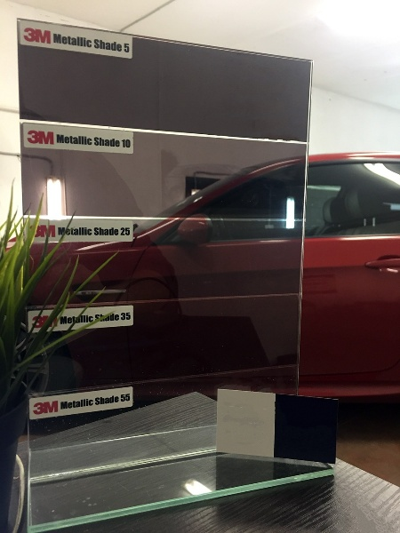

оклейка тонировочной пленкой
Тонировка авто пользуется популярностью у владельцев самых разных автомобилей. С помощью тонировки обеспечивается защита салона от солнечных лучей и от посторонних взглядов, улучшение звукоизоляции и внешнего вида автомобиля. Важно помнить, что только тонировка стекол должна выполняться с соблюдением установленных требований – только в этом случае вы избежите проблем с ГАИ. Поэтому лучше доверить эту работу профессионалам сервиса CustomCar. Тонировка стекол автомобиля у нас выполняется опытными мастерами с использованием проверенных материалов, с учетом специфики транспортного средства.
Для чего нужна тонировка
Тонировка стекол автомобилей это:
Защита от УФ лучей
Несмотря на наличие практически у всех современных автомобилей атермального слоя на стеклах, призванного блокировать ультрафиолетовое излучение, штатные стекла даже автомобилей премиум брендов не могут похвастаться полной блокировкой УФ лучей. Тонировочная пленка останавливает 99% УФ излучения, минимализируя риск развития кожных заболеваний, а так же добавляя комфорта водителю и пассажирам автомобиля.
Защита от бликов
Качественные тонировочные пленки не только защищают салон от попадания УФ лучей, но и уменьшают количество бликов, отсветов фар от двигающихся за Вами автомобилей. Отсутствие бликов увеличивают комфорт водителя в ночное время и положительно влияют на безопасность вождения.
Конфиденциальность
К сожалению, сегодня, оставляя на заднем сиденье портфель с документами или сумку, можно прийти к своему автомобилю и обнаружить разбитое стекло и отсутствие ценной вещи. Качественная тонировка стекол максимально ухудшает видимость салона с улицы, при этом максимально сохраняя прозрачность изнутри. Вы сами можете выбрать прозрачность плёнки, в диапазоне от 5% до 55%, плёнка позволит не только убрать лишние взгляды с вашего чемодана или ноутбука, но и защитит от ненужного внимания Ваших пассажиров или домашних любимцев.
Безопасность
Тонировка стекол – это не только визуальный комфорт и защита от УФ лучей, но еще и увеличение безопасности. В случае повреждения стекла автомобиля с нанесенной на него тонировочной пленкой осколки не разлетаются по всему салону, а остаются на пленке.
О выборе материалов для тонировки
Качество конечного результата напрямую зависит от опыта работы мастера (в нашем случае 11 лет) и выбора материала. Мы опробовали большое количество разных пленок от бюджетных до самых дорогих и раскрученных. Наш выбор в сфере тонировки стекол – пленки 3М, их качество и свойства во многом превосходят большинство аналогов, а повышенная цена с лихвой окупается потребительскими свойствами. Стабильное качество, не зависящее от партии, и понятная гарантийная политика производителя позволяют нам давать собственную гарантию на работы и материалы.
Компания 3м – старейший производитель солнцезащитных плёнок, первый патент на производство которых компания получила в 1966 году:

Важным отличием пленок 3М является то, что помимо визуального эффекта пленки 3М призваны сохранять здоровье водителя и пассажиров автомобиля – компания 3М проводит большое количество исследований, связанных с проблемой рака кожи у профессиональных водителей. Для предотвращения развития заболеваний и защиты компания производитель разработала и запатентовало технологии, позволяющие остановить 99% Уф лучей, помимо этого 3М:
- единственный производитель солнцезащитных и укрепляющих пленок для стекол в мире, который использует запатентованный адгезив собственного производства.
- единственный производитель солнцезащитных и укрепляющих пленок для стекол в мире, который самостоятельно производит полиестр по запатентованной многослойной технологии.
Для нас на первом месте стоит качество конченого результата, именно поэтому мы используем только тонировочные плёнки 3М без альтернатив.
Пленки, которые мы используем для работы со стеклами:
3M Metallic Shade для затемняющей тонировки автомобилей
Metallic Shade – автомобильная тонировочная пленка с металлическим покрытием
- технология металлизированной тонировки стекол с пониженным нагревом
- защита водителя и пассажиров от нагрева и яркого света
- защита от солнца на 100%
| Тип пленки для 6 мм стекла | Передаваемый видимый свет | Отражаемый видимый свет | Общее количество отражаемой солнечной энергии | Снижение нагрева | Блокирование УФ | Снижение уровня бликов |
|---|---|---|---|---|---|---|
| Без пленки | 89% | 8% | 19% | Нет | 38% | Нет |
| MS 5 | 5% | 5% | 49% | 37% | 99% | 95% |
| MS 25 | 25% | 6% | 44% | 31% | 99% | 75% |
| MS 35 | 36% | 6% | 40% | 26% | 99% | 64% |
| MS 55 | 58% | 7% | 34% | 19% | 99% | 42% |
Для удобства выбора пленки, в наших студиях Вы можете ознакомиться с образцами и выбрать необходимую для Вас степень затемнения:
3M Crystalline для атерамальной тонировки стекол
При желании защитить водителя и пассажиров от ультрафиолетового излучения без изменения степени затемнения стекол используется прозрачная атермальная пленка
Пленка Crystalline разработана и запатентована компанией 3М, структура пленки Crystalline состоит из 224 слоев, каждый из которых отражает и блокирует ультрафиолетовое излучение в определенном узком спектре, пропуская при этом естественный свет. Атермальные пленки Crystalline имеют наивысшую оптическую прозрачность в 86% и могут использоваться на любых стеклах без нарушения законодательства.
3M Scotchshield для бронирования стекол
Защитная пленка для бронирования стекол автомобиля состоит из большого количества слоев Опытному автомобильному вору для проникновения в салон достаточно всего 3-х секунд. Защитная автомобильная пленка, состоящая из большого количества слоев плотного полиэфирного материала, прочно удерживает разбитое стекло на месте, в разы замедляя процесс проникновения в автомобиль. Пленка на 86% прозрачно, что позволяет использовать ее на передних стеклах автомобиля, без нарушения законодательства.
Соответствие нормам пдд
Тонировка автомобиля сегодня – совсем не обязательно нарушение правил действующего законодательства. По сегодняшним нормам нельзя тонировать затемняющими пленками передние боковые стекла и лобовое стекло, светопропускная способность задних боковых и заднего стекла не регламентируется. Таким образом, для задней полусферы автомобиля можно выбрать затемненные пленки, светопропускаемостью от 55 до 5%, а для передней части – только прозрачные атермальные.
Нюансы
В каждой работа есть свои нюансы и особенности, знание которых поможет сохранить время и нервные клетки нашей студии и клиента. Попробуем сформулировать основные правила и нюансы:
- Опытные мастера – помимо знаний принципов полировки важно, что бы мастера умели работать с разными типами автомобилей – тонировка бюджетного автомобиля может сильно отличаться по сложности от тонировки автомобилей премиум класса. Мы ежедневно работаем с автомобилями разных категорий, и заранее знаем, на что стоит обратить внимание и какие сложности могут возникнуть в процессе тонирования автомобиля. Стаж наших специалистов по тонировке – от 11 лет.
- Качественные материалы – залог итогового результата, которым действительно будет удовлетворен клиент. С пленками 3М работать сложнее, чем с более бюджетными аналогами, однако, эта сложность стоит того.
- Штат специалистов – иногда, для осуществления качественной тонировки автомобиля, не достаточно одного мастера, некоторые автомобиля требуют арматурных работ, частичной разборки элементов салона, в первую очередь это относится к автомобилям группы VAG (Audi, VW, Porsche и т.д.) и автомобилям BMW. Для этого в нашем штате профессиональный арматурщик с опытом работы с автомобилями премиум класса 19 лет.
- Вдумчивый подход и внимание к мелочам – мы, являясь профессиональной студией детейлинга, выполняя свои работы по тонировке, следим не только за качеством работ, по установке пленки, но и за тем, что бы в процессе монтажа не повредились дорогостоящие материалы, которые находятся вокруг области работы – кожа, пластик, алькантара. Мы всегда защищаем прилегающие элементы и “мочим” электрику, заливая все водой.
- Гарантия – на все работы по тонировке распространяется двойная гарантия – гарантия нашей студии и гарантия производителя пленки. Мы всегда лояльны и идем на встречу клиенту, поэтому честно и без “рассмотрения” выполняем наши гарантийные обязательства.
- Длительность – длительность процесса тонировки стекол очень сильно зависит от выбранной программы и автомобиля, усредненно тонировка задней полусферы занимает около 2,5 часов, однако, если добавить к этому атермальную тонировку передних стекол и бронирование стекол защитной пленкой – срок проведения работ может увеличится до одного рабочего дня.
Стоимость наших услуг:
Тонировка стёкол
Тонировка виниловой пленкой является одной из самых востребованных услуг, и может быть выполнена на лобовом, заднем и боковых стеклах, а также на панорамной крыше. Тонировка автомобильных стекол пленкой защищает от ярких солнечных лучей и обеспечивает максимально возможную безопасность во время ДТП.
от 200 рублей